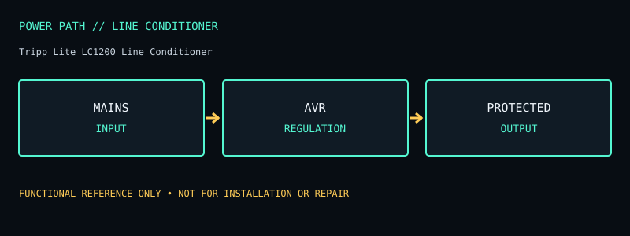

[ LINE CONDITIONER // IDENTIFIED MODEL ]
Tripp Lite LC1200 Line Conditioner
1200 W voltage regulator/line conditioner with four outlets; no battery backup. This record documents the named model only; check the unit nameplate and its matching manufacturer documentation before service or installation.

ARCHIVAL IDENTIFICATION: Preserve the complete SKU, suffix, region, date code, manual revision, installed battery part number and observed condition. Similar model names do not prove identical hardware.
Model specifications & service record
| Subcategory | Line conditioners |
|---|---|
| Topology / function | Automatic voltage regulator/line conditioner with surge protection; not a UPS. AVR corrects supported line sags/surges without battery-backed output. |
| VA and W ratings / outlets | 1200 W maximum load; 120 V input/output family; four NEMA 5-15R outlets and 6 ft input cord on the LC1200 listing. |
| Battery / replacement | No battery; no stored-energy backup. |
| Runtime / operating conditions | No runtime claim; it cannot power a load during a mains outage. |
| Interfaces / monitoring | Front-panel status indicators; no USB/network shutdown or load metering interface specified. |
| Electrical safety / limits | Use only within its 1200 W/120 V rating. It cannot correct every electrical fault, compensate for inadequate branch circuits, or provide outage ride-through. Do not connect another surge strip/conditioner in a chain; heed manufacturer grounding and load warnings. |
| Revision / variant identification | LC1200 differs from LC1200S and from LC1800/LC2400 products. Verify exact suffix, outlet configuration, cord, and rating against the installed label; archived product listings may not describe every production revision. |
Service & archival notes
- Record nameplate and battery labels before removal; separate measured behavior from manufacturer ratings and record load, input conditions, temperature and test date.
- Do not open an energized unit. Mains equipment and batteries can retain hazardous energy; have battery installation, disposal, and electrical work performed according to the product manual and local rules.
- For archival units, document missing covers, damaged cords, alarms, failed indicators, battery age/swelling/leakage, and any substituted part. Do not return a damaged unit to service.
- Product and manual links below are the primary reference for the named regional model. Verify exact revisions rather than transferring ratings from a similarly named SKU.
Manufacturer sources
- Manufacturer product specifications — Tripp Lite LC1200 Line ConditionerModel-specific ratings, regional identity, configuration and available documentation.
- Manufacturer manual / product documentation and runtime referenceUse the manual matching the complete model code and revision. Runtime statements above describe manufacturer chart/conditions where available, not a guaranteed result for an aged unit.